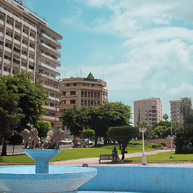
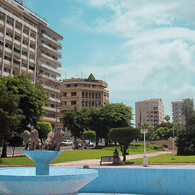
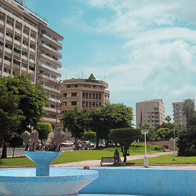

Une formation qualifiante accessible sans condition de diplôme.
La grande Ecole du Numérique est un réseau de plus de 400 formations aux métiers du numérique. Elle favorise l'inclusion et répond aux besoins des ercruteurs en compétences numériques.
Les 14 écoles Access Code Shcool ont été labellisées en tant que "Fabrique de la Grande Ecole du Numérique".
La Grande Ecole du Numérique c'est répondre au besoin d'emploi dans le secteur du numérique.
Apprendre la théorie avant le cours pour approfondir les acquis en groupe
Exporer des problématiques réelles de codages et de développement
Apporter une souplesse dans l'utilisation des outils et techniques ou ressources
Disposer d'une aide pragmatque dans le transfert des savoirs
Développer ses compétences par l'auto-formation grâce à la curiosité et aux bons outils
Notre formation est gratuite, diplômante, intensive et accessible sans prérequis de diplôme. Elle permet un accès rapide aux métiers de Développeur d'applications web & mobile. Après 2 mois d'apprentissage, le stagiaire se spécialise afin de devenir Développeur Front-End ou Développeur Back-End en fonction de ses goûts et de ses compétences.
Motivation, esprit logique, autonomie, capacité d'analyse, rigueur, sens créatif, capacité à s'autoformer et envie de travailler en équipe sont les seuls critères de sélection.
Chaque apprenant bénéficie:

j'ai intégré l'ACS pour une reconversion professionelle, sans autre expérience que celle de ma navigation internet, mais plus motivée que jamais à enfin apprendre un métier tehcnique qui me passione. Aujourd'hui je suis développeuse web dans l'entreprise qui m'a acceuillie en stage. j'ai encore beaucoup à apprendre, mais mon parcours prouve qu'avec du travail et de la persévérance, tout es possible !